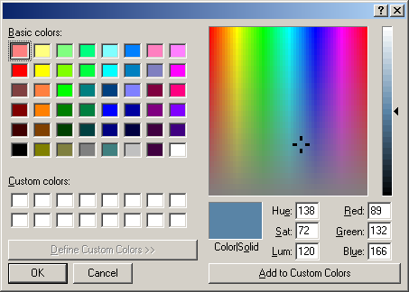
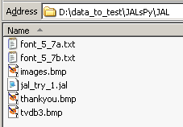

june 2007
JALsPy Source Files
Introduction
Below are a number of intermediate tests.
If you run the tests, please specify the following information (if available)
Requirements
Test 3
This test concerns the hardware, which is fairly complete now.
Test 2
This is a test of the properties editor. From some discussions in the wxPython newsgroup, it seems there might be a problem with user interaction of the properties table on some OS.
RUN device_LED.py, right click on a LED, to edit it's properties
The following things should be tested explictly:
Tested on:
(SM) WinXP-Pro-SP2, Python 2.4 (Enthought edition), wxPython 2.8.4.0
(DD) WinXP-Pro-SP1, Python 2.4.2, wxPython 2.8.4.0.
(SL) Ubuntu Feisty, Python 2.5.1, wxPython 2.8.1.1
One of the problems seen under winXP is the modality of the forms. In order to use application wide the same colors, there should be only one color dialog instance and thus this color dialog must have the mainform as his parent. The wxPython guru Robin Dunn, is right now looking at this problem. But if we compare the color dialogs of Windows and Unbuntu, it might be better if we forget about the application wide custom colors, because Ubuntu doesn't have them.
Windows XP
Ubuntu Feisty
Test 1
There are 2 files to run, in the following order
Tested on:
WinXP-SP2, Python 2.4 (Enthought edition), wxPython 2.8.4.0
NOT OK: ??, wxPython V.2.6.3.0.

JALsPy
|-- JALsPy_main.Create_MainApplication
|
|-- JAL_simulation_file
| |
| |-- ????
|
|-- devices_LED
| |
| |-- device
| |
| |-- rapid_prototyping_board_16F877
| |-- (JALsPy_main.Container)
|
|-- T6963c
| |
| |-- device
|
|-- device_BUTTONS
| |
| |-- device
|
|-- JALsPy_globals
|-- serial_hardware
| |
| |-- JALsPy_globals
| |-- (JALsPy_main.Main_Form) <=== ???
|
|-- serial_hardware_fifo
| |
| |-- serial_hardware
| |-- device
|-- rapid_prototyping_board_16F877
| |
| |-- JALsPy_globals
| |-- pic_general
| |-- delay_any_mc
| |-- (JALsPy_main.Python_Delay_ms) <=== ???
|